Perievent / Spike-triggered average#
The perievent module allows for aligning timeseries and timestamps data around events, as well as computing event-triggered averages (e.g. spike-triggered averages).
Peri-Event Time Histograms (PETH)#
Spike data#
We will start with the common use-case of aligning the spiking activity of a unit to a set of events.
Single unit#
Let’s simulate some uniform stimuli and a unit that has a gaussian firing field after the stimulus:
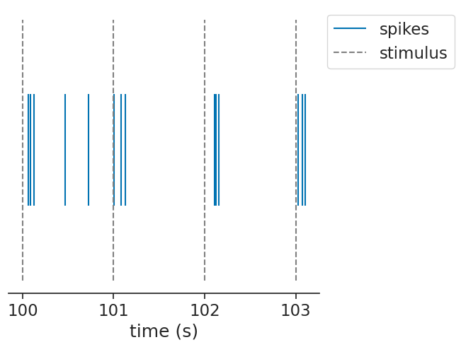
The compute_perievent function
can align timestamps to a particular set of events:
window = (-0.1, 0.4)
peth = nap.compute_perievent(data=ts, events=stimuli, window=window)
peth
Index rate events
------- ------ --------
0 8.0 1.0
1 6.0 2.0
2 6.0 3.0
3 6.0 4.0
4 10.0 5.0
5 6.0 6.0
6 6.0 7.0
... ... ...
992 6.0 993.0
993 6.0 994.0
994 6.0 995.0
995 6.0 996.0
996 6.0 997.0
997 6.0 998.0
998 6.0 999.0
The returned object is a TsGroup containing the aligned timestamps per event.
The event times are stored in the events metadata column.
If you want to get aligned counts, you can now easily call:
bin_size = 0.01
peth_counts = peth.count(bin_size)
peth_counts
Time (s) 0 1 2 3 4 ...
---------- --- --- --- --- --- -----
-0.095 0 0 0 0 0 ...
-0.085 0 0 0 0 0 ...
-0.075 0 0 0 0 0 ...
-0.065 0 0 0 0 0 ...
-0.055 0 0 0 0 0 ...
-0.045 0 0 0 0 0 ...
-0.035 0 0 0 0 0 ...
... ...
0.335 0 0 0 0 0 ...
0.345 0 0 0 0 0 ...
0.355 0 0 0 0 0 ...
0.365 0 0 0 0 0 ...
0.375 0 0 0 0 0 ...
0.385 0 0 0 0 0 ...
0.395 0 0 0 0 0 ...
Metadata
events 1.0 2.0 3.0 4.0 5.0 ...
dtype: int64, shape: (50, 999)
Visualizing the aligned timestamps can now be done by using the to_tsd function.
This function flattens the TsGroup into one Tsd containing all the timestamps and storing the event ids as data.
We can also take the mean of the counts and divide by the bin size to show an estimate of the aligned firing rate:
Text(0.5, 1.0, 'peri.count(bin_size) / bin_size')
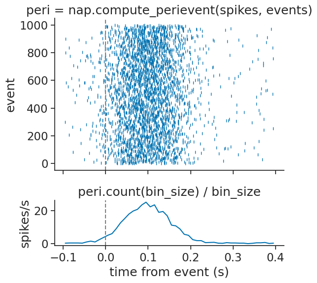
Multiple units#
The same function can be applied to a group of units:
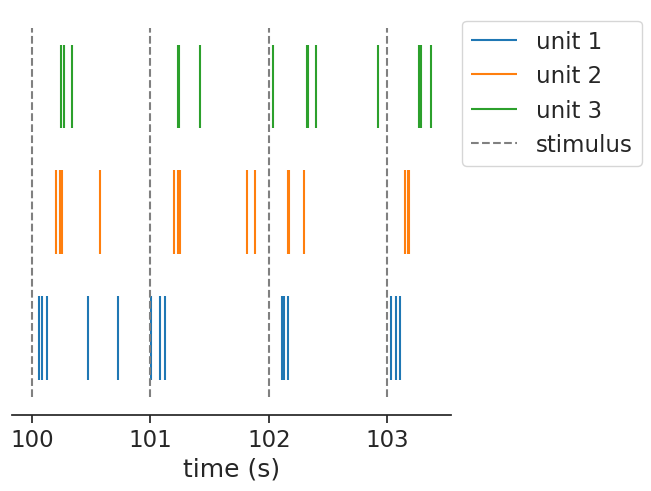
In this case, it returns a dict of TsGroup, containing the same object as before, but now per unit.
peth = nap.compute_perievent(data=tsgroup, events=stimuli, window=window)
peth
{1: Index rate events
------- ------ --------
0 8.0 1.0
1 6.0 2.0
2 6.0 3.0
3 6.0 4.0
4 10.0 5.0
5 6.0 6.0
6 6.0 7.0
... ... ...
992 6.0 993.0
993 6.0 994.0
994 6.0 995.0
995 6.0 996.0
996 6.0 997.0
997 6.0 998.0
998 6.0 999.0,
2: Index rate events
------- ------ --------
0 6.0 1.0
1 6.0 2.0
2 6.0 3.0
3 6.0 4.0
4 8.0 5.0
5 8.0 6.0
6 6.0 7.0
... ... ...
992 6.0 993.0
993 6.0 994.0
994 6.0 995.0
995 6.0 996.0
996 6.0 997.0
997 6.0 998.0
998 6.0 999.0,
3: Index rate events
------- ------ --------
0 6.0 1.0
1 6.0 2.0
2 6.0 3.0
3 6.0 4.0
4 6.0 5.0
5 6.0 6.0
6 6.0 7.0
... ... ...
992 6.0 993.0
993 6.0 994.0
994 6.0 995.0
995 4.0 996.0
996 8.0 997.0
997 6.0 998.0
998 6.0 999.0}
We can again visualize easily:
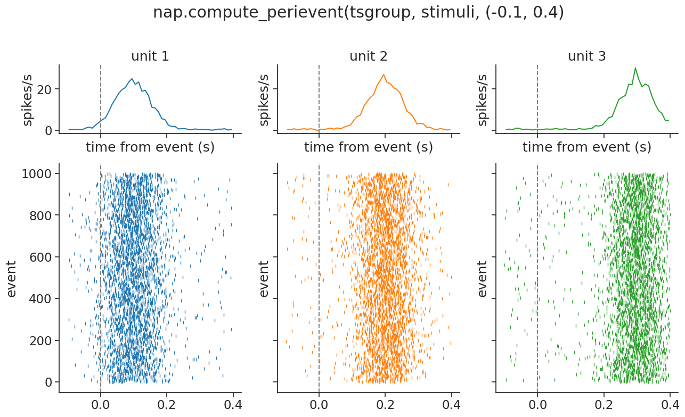
Continuous data#
If you have continuous data, e.g. calcium imaging traces, you can use the exact same function!
compute_perievent is designed in such a way
that it recognizes the input format and decides the correct computation.
Hence, when given a Tsd, TsdFrame or even a TsdTensor, it will know what to do.
Note
compute_perievent only works with regularly
sampled continuous data. If your data is irregularly sampled, try padding it with nan first.
Single unit#
Let’s again start by simulating some data, but this time continuous traces:
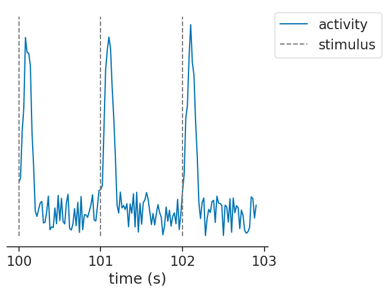
We can pass continuous units (as a Tsd) to the function in the exact same way:
peth = nap.compute_perievent(data=tsd, events=stimuli, window=window)
peth
Time (s) 0 1 2 3 4 ...
---------- ----------- -------- -------- -------- -------- -----
-0.1 nan 0.319801 0.738799 0.327446 0.74879 ...
-0.08 nan 0.77774 0.135411 0.246539 0.879573 ...
-0.06 nan 0.432481 0.955333 0.695028 0.650105 ...
-0.04 nan 0.432294 0.477733 0.416125 0.56332 ...
-0.02 nan 0.610637 0.414773 0.882798 0.270621 ...
0.0 1.11055 1.12788 1.10093 1.25095 1.37459 ...
0.02 1.61672 1.97742 1.35645 1.22818 1.66288 ...
... ...
0.28 0.0147378 0.896075 0.536097 1.004 0.907906 ...
0.3 0.556403 0.125908 0.765736 0.81245 0.672712 ...
0.32 0.29631 0.77291 0.143336 0.332141 0.581917 ...
0.34 0.896276 0.503684 0.907888 0.947612 0.2458 ...
0.36 0.317469 0.537857 0.394905 0.404771 0.685715 ...
0.38 0.0524941 0.095955 0.406505 0.768079 0.157144 ...
0.4 0.298986 0.933923 0.963655 0.572524 0.82938 ...
dtype: float64, shape: (26, 1000)
This time, it will return a TsdFrame with a column per event.
We can again visualize, this time using a heatmap (i.e. using imshow):
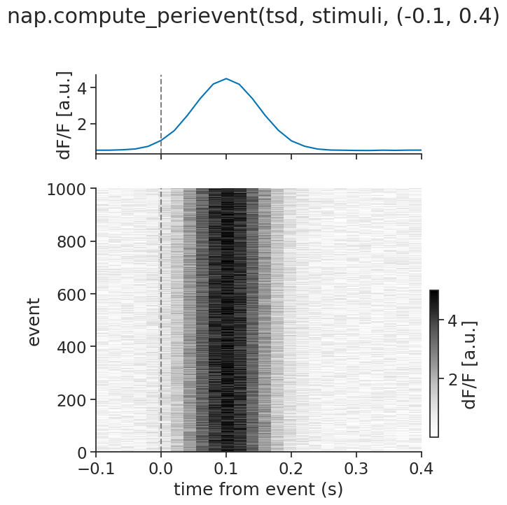
Multiple units#
The same function can also handle multiple continuous units, passed as a TsdFrame:
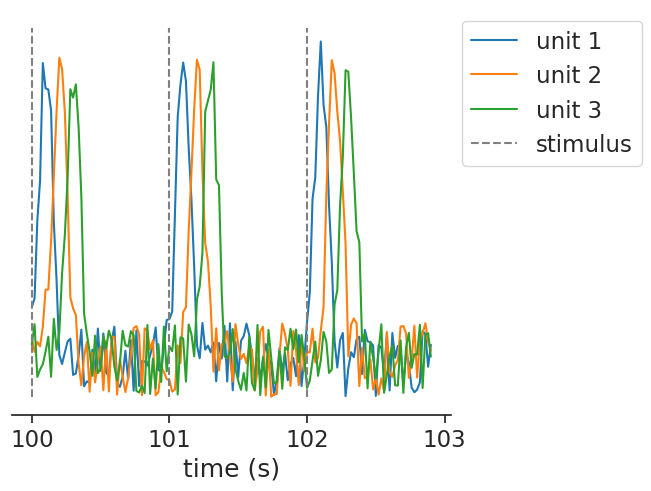
peth = nap.compute_perievent(data=tsdframe, events=stimuli, window=window)
peth
Time (s)
---------- -----------------------------
-0.1 [[nan ... nan] ...]
-0.08 [[nan ... nan] ...]
-0.06 [[nan ... nan] ...]
-0.04 [[nan ... nan] ...]
-0.02 [[nan ... nan] ...]
0.0 [[1.110551 ... 0.013874] ...]
0.02 [[1.616724 ... 0.712907] ...]
...
0.28 [[0.014738 ... 4.447668] ...]
0.3 [[0.556403 ... 4.16218 ] ...]
0.32 [[0.29631 ... 3.946009] ...]
0.34 [[0.896276 ... 3.048155] ...]
0.36 [[0.317469 ... 2.802387] ...]
0.38 [[0.052494 ... 1.741166] ...]
0.4 [[0.298986 ... 1.095065] ...]
dtype: float64, shape: (26, 1000, 3)
In this case, it returns a TsdTensor, containing an added dimension for the events.
We can again visualize by reusing our plotting function:
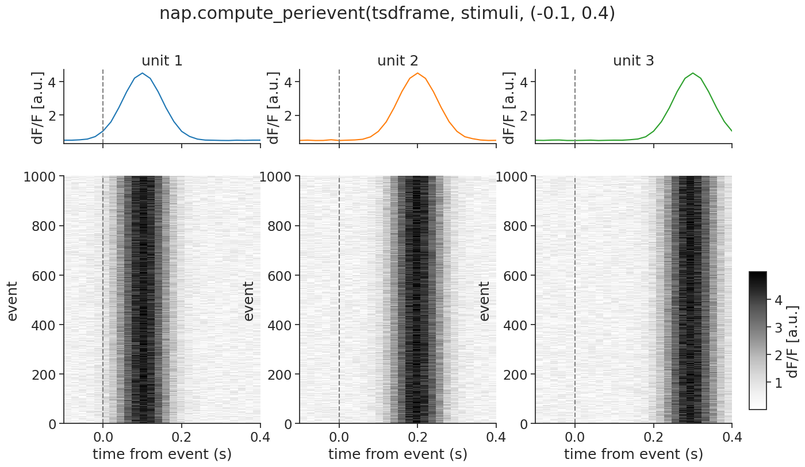
In the most complex case, you can even pass a TsdTensor to compute_perievent.
It will return a TsdTensor with an added dimension for the events.
Visualizing such a tensor becomes a bit complex, but feel free to try!
Event-Triggered Average (ETA/STA)#
The compute_event_triggered_average computes
the average of a continuous feature aligned to a set of events.
The classic use-case is to recover the stimulus feature that drives a neuron’s spiking.
Note
In neuroscience, this is commonly known as a spike-triggered average (STA).
For convenience, compute_spike_triggered_average
is provided as an alias.
Single unit#
Let’s simulate a slowly varying stimulus and a neuron that fires preferentially at its peaks:
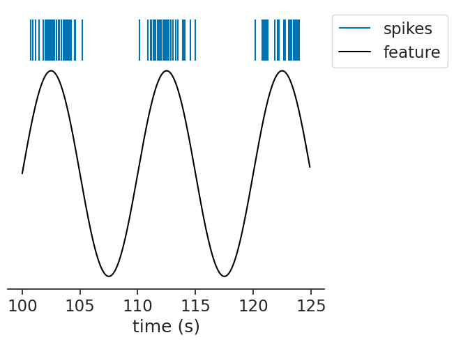
We can pass this to the function, passing a bin size and a window:
eta = nap.compute_event_triggered_average(feature, ts, binsize=0.02, window=(-5,5))
eta
Time (s) 0
---------- ---------
-5.0 -0.656732
-4.98 -0.656812
-4.96 -0.656788
-4.94 -0.65666
-4.92 -0.656428
-4.9 -0.656093
-4.88 -0.655654
...
4.88 -0.662972
4.9 -0.663674
4.92 -0.664271
4.94 -0.664764
4.96 -0.665151
4.98 -0.665434
5.0 -0.665607
dtype: float64, shape: (501, 1)
The result is a TsdFrame with one column. If the neuron is driven by the stimulus,
the ETA should recover the stimulus waveform preceding each spike:
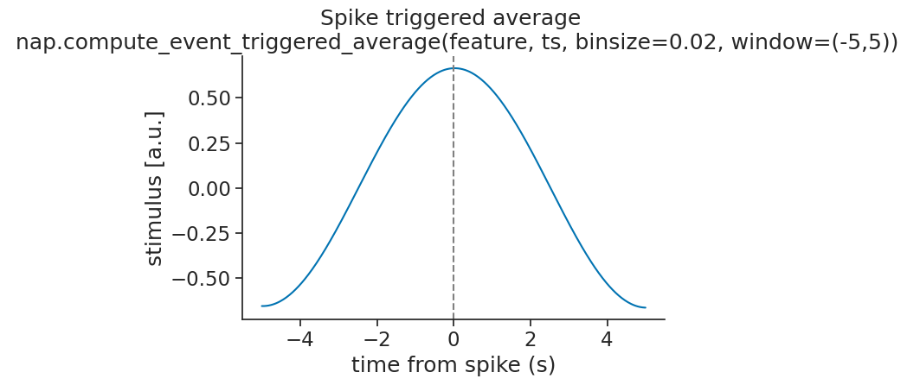
Multiple units#
The same function can be used for a group of units.
When passing a TsGroup, the function returns one column per unit.
Here, we simulate units driven by the stimulus at different phases:
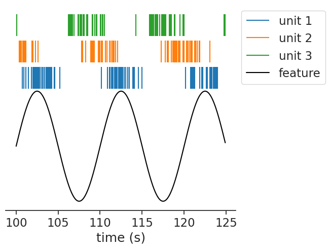
eta = nap.compute_event_triggered_average(feature, tsgroup, binsize=0.02, window=10.0)
eta
Time (s) 1 2 3
---------- -------- ------------ ---------
-10.0 0.656814 -0.00758112 -0.656569
-9.98 0.656897 0.000715394 -0.65648
-9.96 0.656877 0.00901179 -0.656288
-9.94 0.656753 0.0173109 -0.655991
-9.92 0.656525 0.0256072 -0.655591
-9.9 0.656194 0.0338995 -0.655088
-9.88 0.655759 0.0421865 -0.654481
...
9.88 0.657177 -0.0552267 -0.653785
9.9 0.657887 -0.0469454 -0.654303
9.92 0.658492 -0.0386566 -0.654717
9.94 0.658994 -0.0303576 -0.655028
9.96 0.659391 -0.022062 -0.655236
9.98 0.659689 -0.0137629 -0.65534
10.0 0.659874 -0.00546172 -0.655341
dtype: float64, shape: (1001, 3)
Each unit recovers a phase-shifted version of the stimulus:
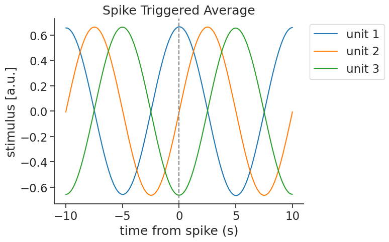
Multiple features#
You can also pass multiple features at once. Here, we simulate two units each driven by a different frequency, and pass both stimulus features together:
eta = nap.compute_event_triggered_average(tsdframe, tsgroup, binsize=0.02, window=10.0)
eta
Time (s)
---------- --------------------------
-10.0 [[0.494402, 0.004337] ...]
-9.98 [[0.494452, 0.004462] ...]
-9.96 [[0.494426, 0.004586] ...]
-9.94 [[0.494321, 0.004707] ...]
-9.92 [[0.494138, 0.004826] ...]
-9.9 [[0.493878, 0.004941] ...]
-9.88 [[0.49354 , 0.005056] ...]
...
9.88 [[0.493595, 0.003994] ...]
9.9 [[0.494102, 0.004131] ...]
9.92 [[0.494533, 0.004267] ...]
9.94 [[0.494882, 0.004395] ...]
9.96 [[0.495154, 0.004521] ...]
9.98 [[0.495349, 0.004646] ...]
10.0 [[0.495464, 0.004766] ...]
dtype: float64, shape: (1001, 2, 2)
The result is a TsdTensor. Each unit recovers its own driving feature while the other averages to near zero:
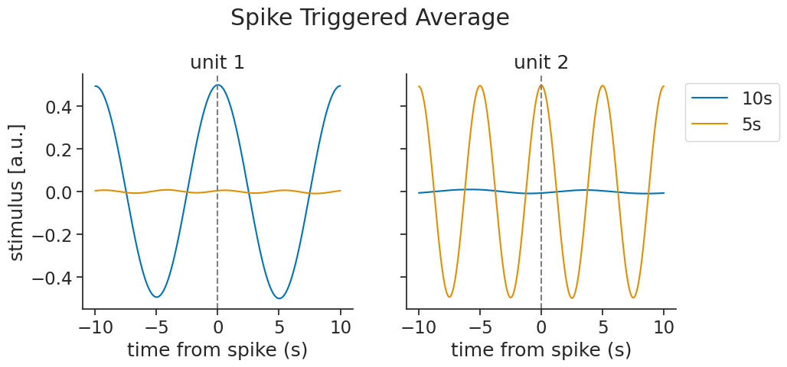